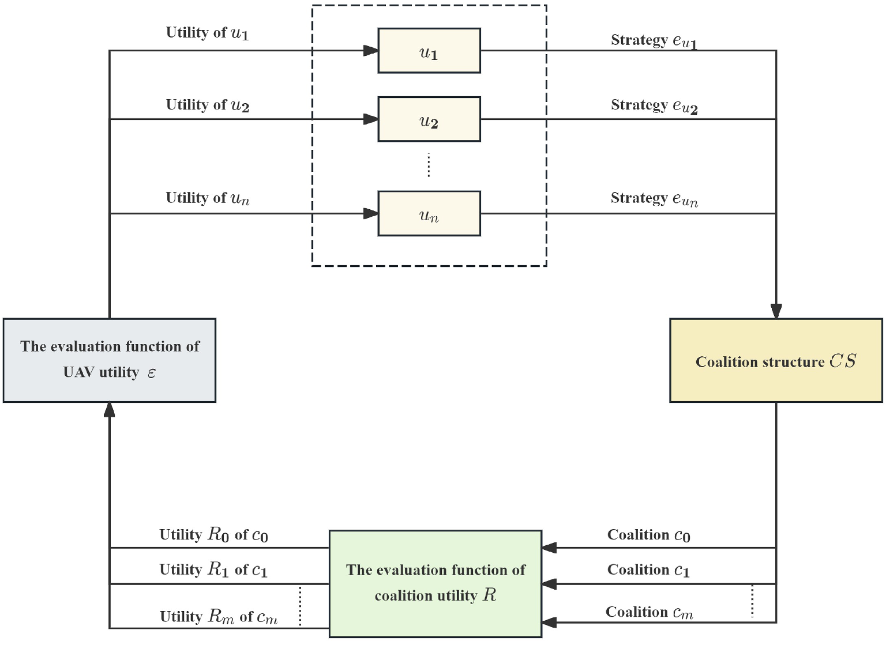
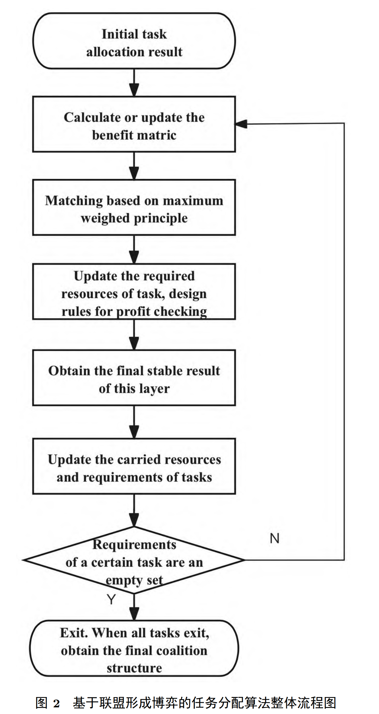

基于联盟形成博弈的异构无人机集群分布式任务分配算法 中国科学:信息科学 南京航空航天大学自动化学院 2024
Distributed task allocation algorithm for heterogeneous unmanned aerial vehicle swarm based on coalition formation game.
- 关键词： 任务分配; 异构无人机集群; 异构资源; 聚类算法; 联盟形成博弈;
- Keywords: task allocation, heterogeneous UAV swarms, heterogeneous resources, clustering algorithm, coalition formation game
- 摘要：
- 针对无人机集群携带异构资源以及任务的异构需求下的复杂任务分配优化求解问题,提出一种基于联盟形成博弈的分布式任务分配算法.
- 首先针对任务分配问题规模较大的特点以及资源的异构性,提出一种基于异构资源的改进 K-medoids 聚类算法,通过对无人机集群和任务进行聚类的预处理,降低了任务分配的规模和难度.
- 考虑任务需求、机载资源以及路径成本等条件建立任务分配模型,将原有任务分配问题转化为联盟划分问题,设计了一种基于联盟形成博弈的分布式任务分配算法进行求解.
- 最后,将 30 个具有异构需求的任务分配给 100 架携带 3 种异构资源的无人机的仿真结果表明,所提算法能够实现较好的任务分配效果,同时极大提高任务分配的实时性,充分发挥集群效能.
- 基金资助： 国家自然科学基金(批准号:62273177,62020106003,62233009)； 江苏省自然科学基金(批准号:BK20211566,BK20222012)； 高校学科创新引智基地(批准号:B20007)； 空间智能控制技术全国重点实验室开放基金(批准号:HTKJ2023KL502006)； 中央高校基本科研业务费(批准号:NI2024001)资助项目；
引言
- 问题描述
- 数学建模
- 无人机建模
- 任务建模
- 联盟形成博弈数学模型
- 目标函数与约束条件
- 数学建模
- 联盟形成博弈算法设计
- 基于异构资源的改进 K-medoids 聚类算法
- 无人机集群聚类
- 任务聚类
- 基于联盟形成博弈的任务分配算法
- 算法复杂度分析
- 基于异构资源的改进 K-medoids 聚类算法
- 仿真验证
- 基于异构资源的改进 K-medoids 聚类算法结果分析
- 基于联盟形成博弈的任务分配算法结果分析
- 结论
引言
常见的分布式任务分配算法主要有博弈论方法、基于市场机制的方法 [7] 和分布式马尔可夫决策过程方法.
- 基于市场机制的方法：
- 合同网算法和拍卖算法是应用较为广泛的基于市场机制的方法.
- 文献 [8] 针对异构无人机和未知目标背景提出了一种基于合作网协议的任务分配算法, 能够获得较大的系统效能, 但算法缺少对某无人机可能同属多个任务最优联盟解的冲突消除考虑.
- 文献 [9] 针对不同作战任务, 建立了一种面向异构且具有时序约束任务的多轮次分布式拍卖算法, 本文模型中无人机可执行不同类型的任务,但缺少对执行相同类型任务的无人机能力的区分. 基于分布式马尔可夫法通常训练难度大, 收敛较慢.
- 分布式马尔可夫决策过程方法：
- 文献 [10] 针对边缘服务器的分布式任务和资源分配问题, 将其建模为部分观测的马尔可夫决策过程,提出一种依赖于多智能体的深度强化两步策略, 所提出的解决方案在训练和收敛方面优于基准.
- 博弈论方法：
- 目前, 得益于博弈论能够为无人机之间的合作协商提供良好性能, 博弈方法已成为热门研究方向,应用于各种优化问题 [11].
- 文献 [5] 设计了智能体之间的组合策略, 将全局效用映射为势函数获得最优分配方案.
- 文献 [12] 采用了基于势博弈的分布式多智能体动态任务分配方法, 该算法在全局搜索能力方面表现良好.
- 文献 [13] 设计了基于偏好联盟形成博弈的任务分配算法, 利用偏好程度定义机器人加入联盟后的效用, 算法保证了多项式时间复杂性和解的纳什稳定性.
- 其中, 联盟形成博弈 (coalition formation game, CFG) 模型是常用的博弈模型之一, 目的在于利用无人机之间的相互合作最大化系统性能, 为参与者之间的决策提供了一个高效的模型与工具. 在整个博弈过程中, 参与者会自行组成若干个联盟, 从全局来看形成若干分组.
- 文献 [14] 设计了一种基于联盟博弈的面向组的分布式聚类算法, 算法经验证在通信链路稳定性、聚类数量和负载平衡等方面优于现有算法.
- 文献 [15] 针对无人机前置群干扰提出一种基于分布式联盟形成博弈的动态任务分配算法,将任务分配问题转化为多智能体协同问题, 算法可以实现与集中式优化相似的性能.
- 文献 [16] 考虑资源属性和任务执行顺序的重叠和互补关系, 在基于顺序重叠联盟形成博弈模型基础上开发了一种偏好重力引导禁忌搜索算法, 可获得稳定的联盟结构.
综上所述, 分布式任务分配算法已取得较多研究成果, 尤其在博弈方面. 然而, 目前工作仍存在以下问题:
- 一是对于机载资源和任务需求资源的异构性研究较为薄弱;
- 二是大规模无人机集群在进行任务分配时求解难度剧增, 导致算法实时性较差;
- 三是单个无人机运载能力很难满足任务需求, 需要考虑无人机之间的协作.
基于联盟形成博弈解决任务分配问题能够：
- 根据无人机在性能、能力和资源方面的差异灵活进行任务分配, 提高系统整体效率;
- 其次具有较高的可拓展性, 能够适应不同规模的无人机集群. 同时联盟形成博弈支持分布式决策, 无人机能够自主进行任务分配, 提升系统的鲁棒性和可靠性;
- 通过合理的收益分配机制, 激励无人机积极参与任务执行, 增强协作效果.
因此, 本文提出一种基于联盟形成博弈的分布式任务分配算法, 主要贡献总结如下:
- 针对原任务分配问题规模大以及资源的异构性, 在 K-medoids 聚类算法的基础上加入关于异构资源数目均衡度的收敛条件以进行改进, 对无人机集群和任务进行合理的预处理, 降低原问题的规模, 提高任务分配的实时性;
- 建立了联盟形成博弈数学模型, 将任务分配问题转化为联盟划分问题; 通过证明本文联盟形成博弈模型为势博弈, 证明了纳什均衡解的存在性并为算法的设计提供了理论基础;
- 设计了基于联盟形成博弈的分布式任务分配算法, 主要包含了最大加权匹配阶段和无人机转移联盟判断阶段, 使得算法相比随机寻优更具有导向性, 能够获得较好的分配效果并且提高任务分配的实时性.

Overall_flowchart_of_the_coalition_formation_game_model

Overall_flowchart_of_the_task_allocation_algorithm_based_on_coalition_formation_game
List of references
- Poudel S, Moh S. Task assignment algorithms for unmanned aerial vehicle networks: A comprehensive survey. IEEE Trans Veh Commun, 2022, 35: 100469. doi-link
- 李 鸿一, 陈 锦涛, 任 鸿儒. Random-sampling-based multi-UAV cooperative search planning for high-rise firefighting. Sci Sin-Inf, 2022, 52: 1610-1626. doi-link
- Zhou W, Kuang M, Zhu J. An unmanned air combat system based on swarm intelligence. Sci Sin-Inf, 2020, 50: 363-374. doi-link
- Lei Y Q, Duan H B. Decision-making of multi-UAV combat game via enhanced competitive learning pigeon-inspired optimization. Sci Sin Tech, 2024, 54: 136-148. doi-link
- Ju K, Mao Z H, Jiang B, et al. Task allocation and reallocation for heterogeneous multiagent systems based on potential game. Act Autom Sin, 2022, 48: 2416-2428.
- Cui W, Li R, Feng Y. Distributed Task Allocation for a Multi-UAV System with Time Window Constraints. Drones, 2022, 6: doi-link
- Chen X, Wei X M, Xu G Y. Multiple unmanned aerial vehicle decentralized cooperative air combat decision making with fuzzy situation. J Shanghai Jiaotong Univ. 2014, 48: 907-913+921.
- Yan F, Zhu X, Zhou Z. Real-time task allocation for a heterogeneous multi-UAV simultaneous attack. Sci Sin-Inf, 2019, 49: 555-569. doi-link
- Lyu Y, Zhou R, Li X, et al. Multi-task assignment algorithm based on multi-round distributed auction. J Beijing Univ Aeronaut Astronaut, 2023, 1-14.
- Chen Y, Sun Y, Yu H. Joint Task and Computing Resource Allocation in Distributed Edge Computing Systems via Multi-Agent Deep Reinforcement Learning. IEEE Trans Netw Sci Eng, 2024, 11: 3479-3494. doi-link
- Xu Y, Jiang B, Yang H. Two-Level Game-Based Distributed Optimal Fault-Tolerant Control for Nonlinear Interconnected Systems. IEEE Trans Neural Netw Learn Syst, 2020, 31: 4892-4906. doi-link
- Wu H, Shang H. Potential game for dynamic task allocation in multi-agent system. ISA Trans, 2020, 102: 208-220. doi-link
- Czarnecki E, Dutta A. Scalable hedonic coalition formation for task allocation with heterogeneous robots. Intel Serv Robotics, 2021, 14: 501-517. doi-link
- Zhang M, Li J, Wu X. Coalition Game Based Distributed Clustering Approach for Group Oriented Unmanned Aerial Vehicle Networks. Drones, 2023, 7: doi-link
- Zhang T, Wang Y, Ma Z. Task Assignment in UAV-Enabled Front Jammer Swarm: A Coalition Formation Game Approach. IEEE Trans Aerosp Electron Syst, 2023, 59: 9562-9575. doi-link
- Qi N, Huang Z, Zhou F. A Task-Driven Sequential Overlapping Coalition Formation Game for Resource Allocation in Heterogeneous UAV Networks. IEEE Trans Mobile Comput, 2023, 22: 4439-4455. doi-link
- Wang J, Jia G, Lin J. Cooperative task allocation for heterogeneous multi-UAV using multi-objective optimization algorithm. J Cent South Univ, 2020, 27: 432-448. doi-link
- Gao C, Du Y L, Bu Y N, et al. Heterogeneous UAV swarm grouping deployment for complex multiple tasks. J Syst Eng Electron, 2024, 46: 972-981.
- Ma Y, Jiang B, Tao G. Uncertainty decomposition-based fault-tolerant adaptive control of flexible spacecraft. IEEE Trans Aerosp Electron Syst, 2015, 51: 1053-1068. doi-link
- Mao Z, Jiang B, Shi P. Fault-tolerant control for a class of nonlinear sampled-data systems via a Euler approximate observer. Automatica, 2010, 46: 1852-1859. doi-link